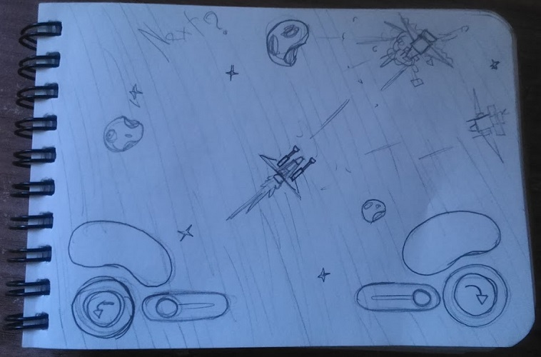
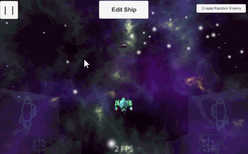
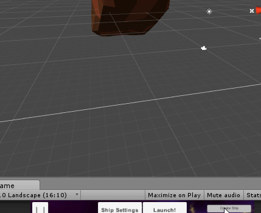
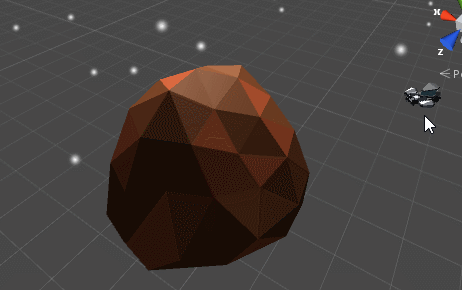

My role in this project: EVERYTHING!
tl;dr: A small, unfinished and experimental project I made to see if an idea I had in mind would work in game form. It would be a mobile space shooter where you could explore a procedural galaxy, fight, steal from merchants, gather resources and trade goods.
It all started with this simple sketch below. I was at the train and had my sketchbook with me, and bored as I would normally be on the train, I started to think about games and game ideas, and suddenly an idea came to mind. I quickly sketched it - I have a really bad memory so I need to take notes and sketch things so I don't forget about them. The main deal behind this idea would be the controls. I wanted to make a game where you controlled a ship with fixed controls, in a way that the controls could be really comfortable. Mobile game controls always bugged me a bit so I was always inspired to try and make controls that felt actually good.
The controls of the game would be like in the sketch - symmetrical, with a shooting button and a steering button on each side. Pressing the left steering button would steer the ship left while also moving a bit forward, and the same would happen with the right button. Pressing both buttons would make you move forward. The left and right shooting buttons would be used to fire the left and right weapons of the ship. Pressing both at the same time would fire the main weapon. There were also two sliders that I ended up scrapping from the game because I couldn't think of any functionality for them.
I implemented the controls but couldn't quite get them to be how I imagined. The controls were there. Working. But there was something odd and I couldn't figure out what it was.

I started to think of factions, ship parts and weapons you could unlock. I ended up creating a pirate faction, a military faction and a merchant faction, each with its different parts you could find and unlock.
After I decided the factions and parts, I modeled them all and created something I'm kind proud of to this day, even though it's something relatively simple: a ship creation system.

And of course, with the modular ship system in place, I made it so that the game could create random ships on the go! There were many combinations of ships that could be spawned, and the system was made in a way that I could easily add more parts to the pool.
And I added random values to some parts, like in borderlands or fallout 4. This laser weapon, for instance, had a tiny chance of penetrating its target.
I implemented everything on this project very quickly, but I was led astray due to the fact that I couldn't figure out what was wrong with the controls. No matter how much I adjusted them, it never felt quite right. Maybe I was too picky, maybe mobile controls were meant to not be good. Nevertheless, I learned many interesting things while making this small project.